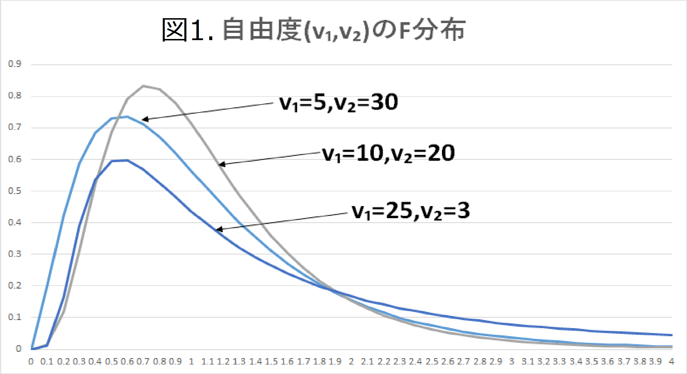
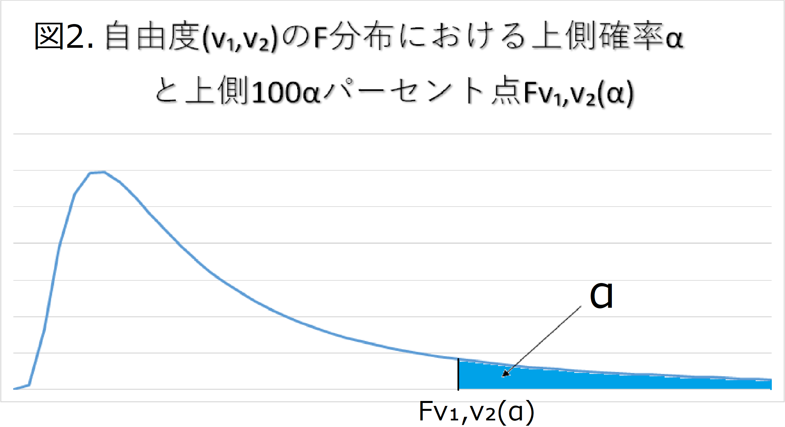
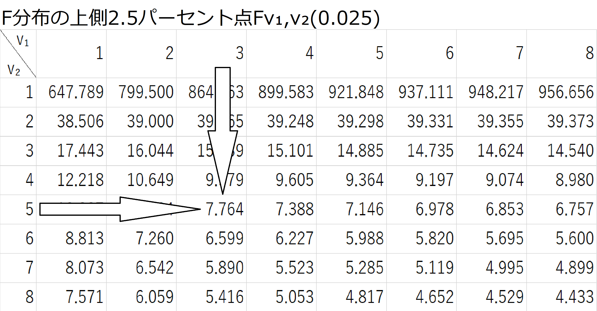

F分布（F-distribution）は二つの自由度（v1,v2）で規定される分布である（図1参照）。
F分布の上側確率αを知って、自由度のペア（v1,v2）に対する上側確率100αパーセント点
Fv1,v2(α)を読み取る表がある（図2参照）。この場合は、一つのαの値に対して、一つの表が作られる
ので、それぞれα=0.1，0.05，0.025，0.01，0.001に対するFv1,v2(α)の値が与えられている。
下側100αパーセント点、つまり上側100(1-α)パーセント点Fv1,v2(1-α)を求めるには、次式
Fv1,v2(1-α)＝ 1 Fv2,v1(α)
を用いる。つまり、自由度(v1,v2)のF分布の上側100(1-α)パーセント点は、自由度(v1,v1) のF分布の上側100αパーセント点の逆数に等しいというF分布の性質を利用する。
 例題
自由度v1＝3，v2＝5の下側2.5パーセント点(α=0.025)を求めよ。
上記の式を用いる。下の表よりv1=5，v2=3に対する上側2.5パーセント点はF3,5 (0.025)＝7.764となるため自由度v1=3，v2=5の下側2.5パーセント点は上記の式より、 F3,5(0.975)＝1/7.764≒0.129となる。
 トップページへ